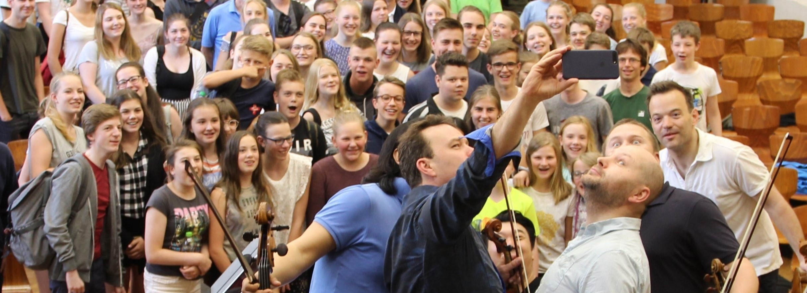
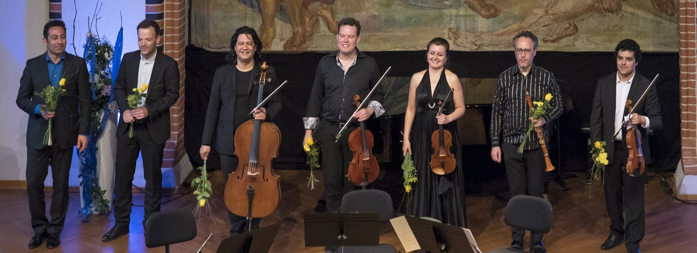
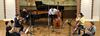
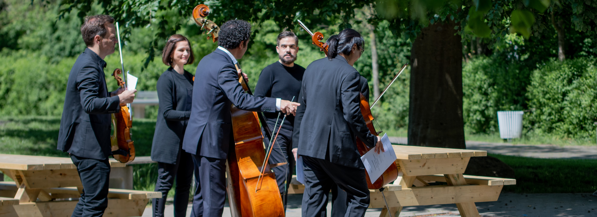
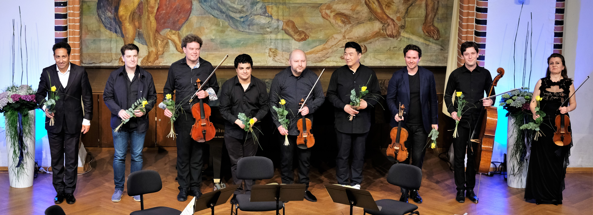
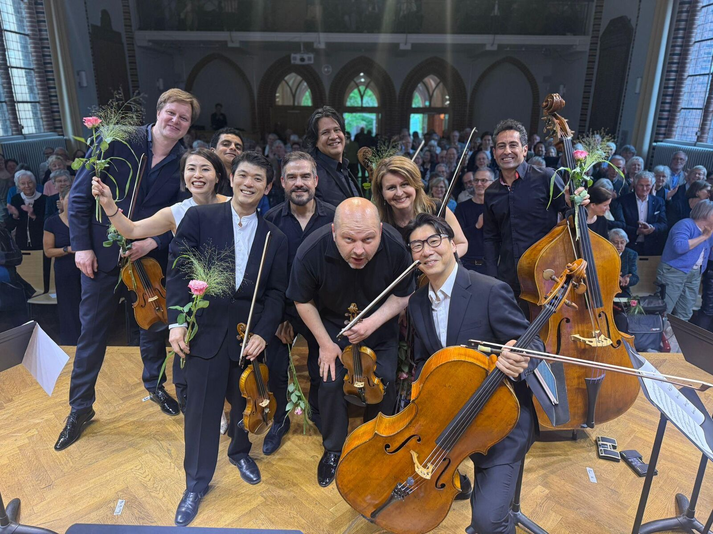
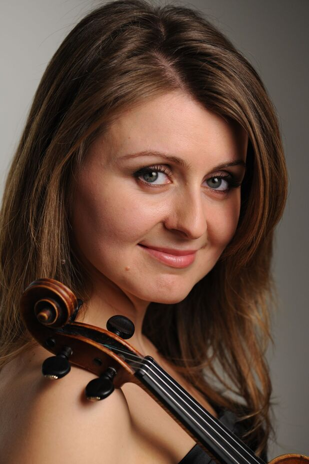
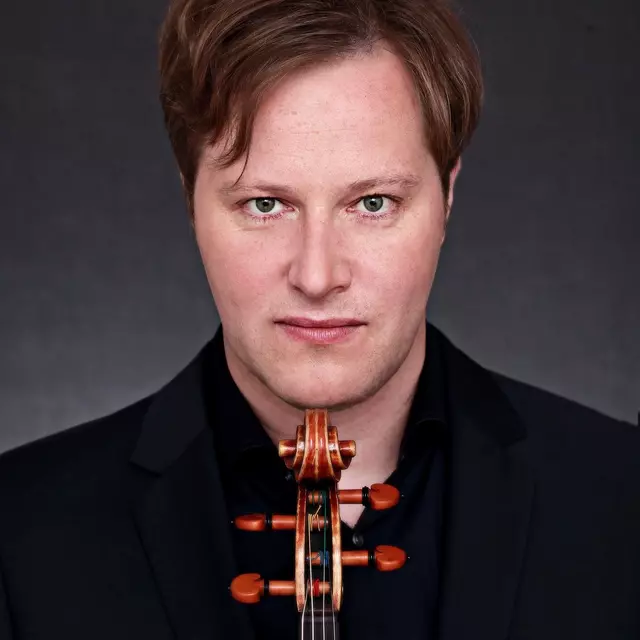
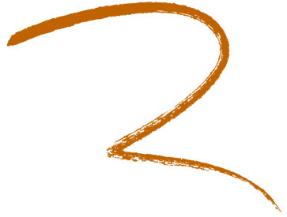

Maiklänge 2026 im DLF Kultur
Am 29.05.2026 ab 20.00 Uhr sendet Deutschlandfunk Kultur den Mitschnitt des Eröffnungskonzertes vom 08.Mai 2026.
Mehr Infos gibt es auf der Homepage des DLF Kultur .


Am 29.05.2026 ab 20.00 Uhr sendet Deutschlandfunk Kultur den Mitschnitt des Eröffnungskonzertes vom 08.Mai 2026.
Mehr Infos gibt es auf der Homepage des DLF Kultur .
.JPG)





.jpg)
.jpg)
.jpg)

Die 10. Maiklänge sind Geschichte.
Wir danken den Musizierenden, den Zuhörenden und den Unterstützenden... und stürzen uns in die Planung der 11. Maiklänge vom 28.-30.5.2027
Das weitere Programm sehen Sie unten bei den einzelnen Konzerten!
Es musizieren: José Gallardo, Natalia Lomeiko, Boris Brovtsyn, Momo Hiber, Daishin Kashimoto, Sindy Mohamed, Andreas Willwohl, Claudio Bohórquez., Tim Park, Nabil Shehata und
Das Orchester der Barenboim-Said Akademie Berlin
Änderungen bei Programm und/oder Musiker:innen sind vorbehalten!
Edvard Grieg: Suite “Aus Holbergs Zeit”, op. 40 – Praelude
Wolfgang Amadeus Mozart: Sinfonia concertante Es-Dur, KV 36
Ludwig van Beethoven: Tripelkonzert C-Dur, op. 56
Solist:innen: Natalia Lomeiko, Daishin Kashimoto, Sindy Mohamed; Claudio Bohórquez, José Gallardo
Änderungen bei Programm und/oder Musiker:innen sind vorbehalten!
Wolfgang Amadeus Mozart: Klaviertrio C-Dur, KV 548
Robert Schumann: Klavierquintett, op. 44
Olli Mustonen: Nonett Nr. 2
Pjotr Iljitsch Tschaikowsky: Sextett d-Moll „Souvenir de Florence“, op. 70
Es musizieren: Natalia Lomeiko, Daishin Kashimoto, Momo Hiber, Boris Brovtsyn, Sindy Mohamed, Andreas Willwohl, Claudio Bohórquez, Tim Park, José Gallardo, Nabil Shehata
Änderungen bei Programm und/oder Musiker:innen sind vorbehalten!
Johann Sebastian Bach: Goldberg-Variationen G-Dur, BWV 988 (Bearbeitung: Sitkovetsky)
Es musizieren: Natalia Lomeiko, Daishin Kashimoto, Momo Hiber, Boris Brovtsyn, Sindy Mohamed, Andreas Willwohl, Claudio Bohórquez, Tim Park, José Gallardo, Nabil Shehata
Änderungen bei Programm und/oder Musiker:innen sind vorbehalten!
Franz Schubert: Klavierquintett A-Dur „Forellenquintett“, D 667
Dmitri Schostakowitsch: Fünf Stücke für zwei Violinen und Klavier
Zoltán Kodály: Intermezzo für Streichtrio
Jacques Offenbach: Duo für Viola und Kontrabass, op. 50 Nr. 1 (Bearbeitung: Shehata)
Maurice Ravel: Valses nobles et sentimentales für Nonett (Bearbeitung: Mulleman)
Es musizieren: Natalia Lomeiko, Daishin Kashimoto, Momo Hiber, Boris Brovtsyn, Sindy Mohamed, Andreas Willwohl, Claudio Bohórquez, Tim Park, José Gallardo, Nabil Shehata
Änderungen bei Programm und/oder Musiker:innen sind vorbehalten!
Eröffnungskonzert: 35€ / ermäßigt*: 20€
Abendkonzerte: 25€ / ermäßigt*: 15€
Matineekonzert: 20€ / ermäßigt*: 10€
Großes Paket (alle vier Konzerte): 95€ / ermäßigt*: 45€
Kleines Paket (Eröffnungskonzert + Matinee + 1 Abendkonzert): 75€ / ermäßigt*: 35€
Kleines Paket (Soiree + Abschlusskonzert + Matinee): 65€ / ermäßigt*: 35€
*Ermäßigung für Schüler:innen, Auszubildende, Studierende, Erwerbslose
 Nabil Shehata - Kontrabass, künstlerischer Leiter des Festivals
Nabil Shehata - Kontrabass, künstlerischer Leiter des Festivals
 Sindy Mohamed Viola
Sindy Mohamed Viola

Natalia Lomeiko - Violine
Andreas Willwohl - Viola Boris Brovtsyn - Violine
Boris Brovtsyn - Violine
 Tim Park - Violoncello
Tim Park - Violoncello
 Momo Hiber - Violine
Momo Hiber - Violine
 Claudio Bohórquez - Violoncello
Claudio Bohórquez - Violoncello

Das internationale Kammermusikfest Verden präsentiert musikalischen Genuss auf höchstem Niveau auch abseits der großen Metropolen. Ein internationales Ensemble aus hochkarätigen Musikern ist für ein Wochenende zu Gast in Verden und präsentiert in vier Konzerten abwechslungsreiche Programme bedeutender kammermusikalischer Literatur aus verschiedenen Epochen.
Für die Maiklänge 2026 ist ein besonderes Jubiläumsprogramm geplant, das demnächst vorgestellt werden wird.
Die Wurzeln des künstlerischen Leiters Nabil Shehata führen den Kammermusiker und Dirigenten aus den internationalen Konzertsälen regelmäßig zurück nach Verden, wo er am Domgymnasium sein Abitur ablegte. Seit 2017 gestaltet er zusammen mit dem Verein „Musik und Kultur am Domgymnasium e.V.“ das Kammermusikfest in der historischen Aula der Schule.
Wir freuen uns, Ihnen nun schon zum zehnten Mal die „Maiklänge“ präsentieren zu können und möchten Sie schon jetzt zu spannenden Hörerlebnissen mit dieser engagierten und internationalen Besetzung einladen.
In das Projekt sind auch Schülerinnen und Schüler eingebunden. Neben den Konzertbesuchen bekommen sie die Gelegenheit, an Proben teilzunehmen, und erleben die Intensität professionellen Musizierens. Darüber hinaus sind Meisterkurse für talentierte junge Musikerinnen und Musiker aus dem gesamten Kreisgebiet geplant.
Unser besonderer Dank gilt allen Förderern der Maiklänge. Interessierte, die das kulturelle Leben in Verden mitgestalten möchten, können Mitglied werden oder uns mit einer Zuwendung an den Verein helfen, auch in Zukunft ambitionierte Projekte umzusetzen.
Wir freuen uns auf Sie!
 und die Beitrittserklärung finden Sie hier.
und die Beitrittserklärung finden Sie hier.